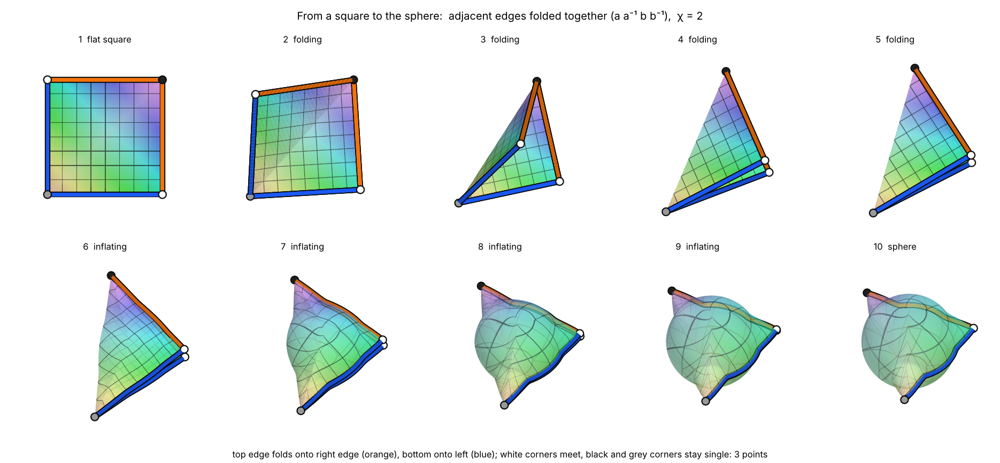

From a square to the sphere

Animated version: sphere-sequence.webp. Single frames: stages/.

Gluing: a a⁻¹ b b⁻¹. The top edge is glued to the right edge, and the bottom edge to the left edge, each pair meeting at its shared corner like the flaps of an envelope.
Corners: the white corners meet; the black and grey corners each stay single. That gives 3 points, so χ = 3 − 2 + 1 = 2.
Stages: - 1–5, folding: the square folds along its diagonal, so the top edge swings onto the right edge and the bottom edge onto the left. - 6–10, inflating: the folded envelope inflates into a sphere. Both layers of the envelope become hemispheres, and the glued edges become the seam between them. The 3 corner points stay as sharp cone tips: the square’s corner angles do not flatten out, so they remain visible on the closed surface.
The result is a genuine embedding: the surface never passes through itself.
Generated by ../surface-sequences/surface_sequences.py
(python surface_sequences.py sphere keys). Conventions are
described in the overview.